|
por Fernando
Rodrigues
Era inevitvel.
Com o sucesso da Srie Clssica de Jornada e suas incontveis reprises, o interesse por qualquer material novo crescia exponencialmente. Por conseqncia, o mercado de quadrinhos dos Estados Unidos, que movimenta nmeros infinitamente superiores aos do mercado brasileiro, viu a possibilidade de explorar um pedao desta franquia to lucrativa. Assim, nos ltimos 35 anos (com algumas interrupes ao longo dos anos),
Jornada nas Estrelas teve espao garantido no universo dos quadrinhos.
A histria da publicao dos quadrinhos de Jornada pode ser dividida em fases, de acordo com a editora que as publicou. So elas: Gold Key Comics (julho de 1967 a fevereiro de 1979), Marvel Comics (dezembro de 1979 a fevereiro de 1982), DC Comics (fase 1, fevereiro de 1984 a novembro de 1988), DC Comics (fase 2, setembro de 1989 a dezembro de 1995), Malibu
Comics (apenas DS9, de 1993 a 1995), Marvel Comics (1996 a 1998) e, finalmente, Wildstorm Comics (1999 a 2001).
 Os primeiros quadrinhos de
Jornada foram publicados pela Gold Key Comics, quase simultaneamente ao final da primeira temporada da
Srie Clssica. As primeiras edies guardavam pouca semelhana com a srie de televiso, e a publicao era realizada em intervalos irregulares. A maior caracterstica destes quadrinhos era a forte tendncia a histrias com mais apelo ao pblico infanto-juvenil, apresentando monstros espaciais e fenmenos sem qualquer fundamento cientfico. Os primeiros quadrinhos de
Jornada foram publicados pela Gold Key Comics, quase simultaneamente ao final da primeira temporada da
Srie Clssica. As primeiras edies guardavam pouca semelhana com a srie de televiso, e a publicao era realizada em intervalos irregulares. A maior caracterstica destes quadrinhos era a forte tendncia a histrias com mais apelo ao pblico infanto-juvenil, apresentando monstros espaciais e fenmenos sem qualquer fundamento cientfico.
A Gold Key publicou 61 edies dos quadrinhos de Jornada, ao longo de 12 anos, at perder os direitos de publicao.
O lanamento de "Jornada nas Estrelas: O Filme", em 1979, deu aos quadrinhos da franquia um novo lar -- a poderosa Marvel Comics. Com a publicao da quadrinizao oficial do filme, a Marvel deu incio a uma srie prpria de
Jornada, originando 18 edies. A adaptao do filme ficou a cargo que ningum menos que Stan Lee, gnio criador de personagens como o Homem-Aranha e os X-Men. A Marvel encarregou dois fs de
Jornada, Mary Wolfman e Dave Cockrum, de cuidar das demais edies.
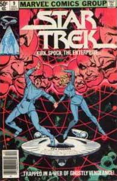 Os direitos adquiridos pela editora, porm, diziam respeito apenas aos personagens, cenrios e pocas citados em
"Jornada nas Estrelas: O Filme", limitando assim as possibilidades criativas dos artistas. Apesar dos esforos destes e outros artistas -- entre eles, Martin Pasko, Luke McDonnell, Joe Brozowski e Michael Nasser -- para contar histrias slidas dentro das limitaes envolvidas, as tiragens venderam muito menos que o esperado, levando a Marvel a cancelar o ttulo aps 18 edies, em 1982.
Aps o primeiro filme, o futuro de Jornada era incerto. Apesar de ter uma bilheteria considerada razovel, recebera duras crticas, e os investidores tinham dvidas se aquela venerada srie de TV poderia se transformar em uma franquia de filmes, ao estilo James Bond. A Paramount arriscou, e apostou suas fichas em
"Jornada nas Estrelas II: A Ira de Khan".
Aps assistir a esse filme, um empolgado Mary Wolfman, antigo responsvel pelos quadrinhos de Jornada, contactou a DC Comics e convenceu a editora a adquirir os direitos de publicao junto Paramount. Desta vez, porm, Wolfman foi cuidadoso o bastante para garantir que os direitos assegurassem o uso de personagens e situaes mostrados na
Srie Clssica. Em outubro de 1983, Jornada estava de volta aos quadrinhos.
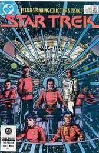 A primeira fase dos quadrinhos de
Jornada na DC durou oito anos. As histrias resgatavam o clima das aventuras originais da srie. Havia um senso de continuidade nas tramas, deixando totalmente para trs a fase infanto-juvenil dos quadrinhos. O grande diferencial, porm, era a oportunidade de se utilizarem todos os eventos mostrados anteriormente na srie e nos filmes. Assim, Romulanos, Andorianos, Tholianos e outras raas mostraram sua cara nas histrias, bem como velhos personagens conhecidos dos fs, como Harry Mudd (que j havia aparecido em histrias da Gold Key). Personagens criados especialmente para os quadrinhos ganhavam espao prprio e enriqueciam a trama.
As primeiras oito edies preocuparam-se em estabelecer uma continuidade entre
"A Ira de Khan" e " Procura de Spock", e por este motivo Spock no participava das tramas. A partir da edio nmero 9, as histrias se passavam entre os eventos mostrados em
" Procura de Spock" e "A Volta para Casa". A partir da edio 37, as tramas do continuidade aos eventos mostrados no quarto filme da srie. Em 1987, com o surgimento de
A Nova Gerao, a DC criou uma linha nova de quadrinhos, voltados apenas para as aventuras de Picard & cia.
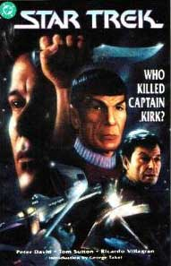 A Nova Gerao foi lanada em quadrinhos antes mesmo da estria da srie na televiso, em uma minissrie especial com seis edies. Em 1988, a DC interrompeu a publicao dos quadrinhos por 10 meses, enquanto renegociava com a Paramount os direitos de publicao.
Em 1989, porm, os quadrinhos de Jornada voltaram a ser publicados pela DC, com uma linha prpria da
Nova Gerao, e com novos editores e novos roteiristas. Esta nova fase caracterizou-se por participaes de personalidades envolvidas com o mundo da fico cientfica, como Howard Weinstein, A.C. Crispin, Bill Mummy, Peter David e at mesmo atores como George Takei e John DeLancie.
desta fase, tambm, a publicao de edies anuais especiais, que apresentavam histrias em outros perodos de tempo, usualmente focando os principais eventos na continuidade das sries. A primeira edio anual, por exemplo, mostrava a ltima misso cumprida pela Enterprise de Kirk, concluindo assim os cinco anos de explorao previstos. Neste perodo, tambm, foi publicada a primeira Graphic Novel de
Jornada, "Debt of Honor", publicada no Brasil em 2002.
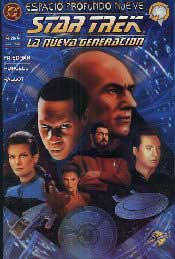 Em 1993,
Jornada nas Estrelas ganhava uma nova srie na televiso,
Deep Space Nine, e, deixando a poderosa DC para trs, a Malibu Comics negociou e adquiriu junto Paramount os direitos de publicao. A Malibu trouxe novas tcnicas de marketing para os quadrinhos de
Jornada, como capas expandidas, capas fotogrficas e capas hologrficas. No total, a Malibu publicou 32 edies de
Deep Space Nine, duas edies anuais especiais, trs minissries, incluindo um encontro entre as tripulaes de
Deep Space Nine e da Nova Gerao, em parceria com a DC.
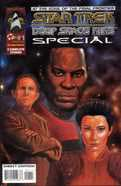 A Malibu havia adquirido os direitos para os quadrinho de
Voyager, mas acabou no o fazendo, eventualmente desistindo dos direitos de publicao de ambas as sries em dezembro de 1995. A DC Comics, neste mesmo ms, abriu mo dos direitos de publicao da
Srie Clssica e da Nova Gerao.
Em 1996, comemorando os 30 anos de Jornada, a Marvel uniu-se Paramount para a publicao de uma nova linha de quadrinhos. Todas as sries de
Jornada criadas at ento tiveram seu espao. Deep Space Nine e
Voyager ganharam ttulos prprios, enquanto a Srie Clssica e
A Nova Gerao alternavam-se ms a ms em um ttulo chamado "Star Trek - Unlimited". E as aventuras da tripulao da
Srie Clssica na segunda misso de cinco anos foram mostradas em uma minissrie chamada "Star Trek - Untold Voyages"
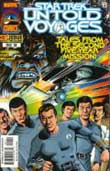
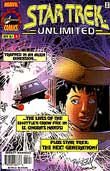
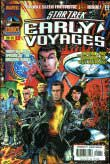 O grande diferencial desta linha da Marvel, porm, foi a criao de dois ttulos orginais. O primeiro deles, "Starfleet Academy", mostrava o dia-a-dia de um grupo de cadetes na Academia da Frota -- entre eles, Nog, o
Ferengi sobrinho de Quark, de DS9. O segundo ttulo, "Early Voyages", contava as aventuras da Enterprise sob o comando de Christopher Pike, que comandou a nave antes de Kirk, como mostrado no episdio
"The Menagerie", da Srie Clssica. Desta fase, tambm, surgiu o primeiro crossover oficial entre os personagens de Jornada e um outro universo ficcional, com a publicao de "Star Trek - X-Men".
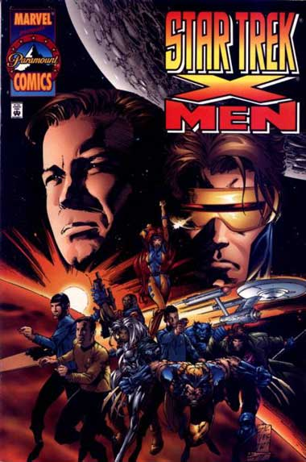
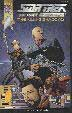 Em 1998, com problemas financeiros, a Marvel desistiu de sua participao nas publicaes, com o consentimento da Paramount. Houve um novo intervalo de quase um ano sem a publicao de quadrinhos de
Jornada. Em 1999, a Wildstorm, uma diviso da DC Comics, adquiriu os direitos. A Wildstorm optou por no publicar revistas peridicas, concentrando-se em minissries e edies especiais, dando-lhes maior liberdade para contar com a participao de autores com experincia no campo da fico. A Wildstorm participou, tambm, de modo breve, da campanha de relanamento de
Deep Space Nine, originada em livros pela Pocket Books, que mostravam os eventos ocorridos aps o ltimo episdio da srie.
A partir de julho de 2001, a Wildstorm deixou de publicar os quadrinhos, alegando que as vendas haviam sido baixas. Desde ento, no houve nenhuma nova aventura de
Jornada no mercado.
Quadrinhos de Jornada no Brasil
A publicao de quadrinhos de Jornada no Brasil foi escassa e a intervalos irregulares. As primeiras revistas foram lanadas pela Editora Ebal, a partir de 1969, publicando ento histrias lanadas pela Gold Key, no preto-e-branco caracterstico das publicaes da editora. Esta srie durou meros 14 nmeros.
Na segunda metade da dcada de 70, a Editora Abril lanou uma srie prpria de quadrinhos, tambm traduzindo edies da Gold Key, desta vez em cores. Foram lanados poucos nmeros, e algumas edies especiais. As edies especiais caracterizavam-se pela presena de pequenos artigos de cincia e astronomia, em gritante contraste com os absurdos mostrados pelas histrias da Gold Key.
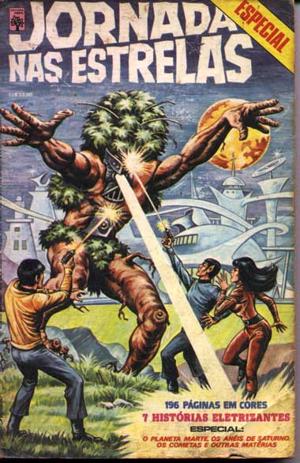
Quase quinze anos de passariam antes que os quadrinhos de
Jornada voltassem a ser publicados no Brasil. Em 1991, a Editora
Abril deu incio a um ttulo prprio da srie, em edies que
preservavam o formato original da revista, fugindo do "formatinho".
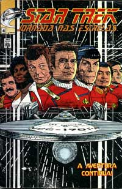 As
edies traziam histrias da Srie Clssica, da segunda
fase da DC, e histrias da Nova Gerao. Na contra-capa,
fotos de episdios de srie clssica e do sexto filme da srie,
ento prestes a ser lanado. Aps nove nmeros, a revista foi
cancelada, por problemas editoriais da Abril -- um contra-senso,
j que alguns nmeros da revista venderam mais que o campeo de
vendagem "Batman".
Outros 10 anos se passariam sem novas publicaes de quadrinhos
no Brasil, at a publicao, em 2002, pela editora Brainstore,
de "Jornada nas Estrelas - Dvida de Honra", adaptao da primeira
Graphic Novel da histria de Jornada.
Referncias:
http://www3.sympatico.ca/norb.stachowski/ST.htm
http://www.cs.uu.nl/wais/html/na-dir/star-trek/comics-checklist/part1.html
Coleo particular do autor.
Você pode baixar uma apresentação para Power-Point
sobre HQs de Jornada nas Estrelas que foi utilizada na
palestra sobre o tema, ministrada pela equipe do Trek Brasilis
no evento "O Mundo dos Quadrinhos" realizado
pelo SENAC de São Paulo em 5 de julho de 2003. Para fazer
o download do arquivo, que contém muitas capas de revistas
e informações diversas, basta clicar aqui.
Ele tem cerca de 4 Mb.
|